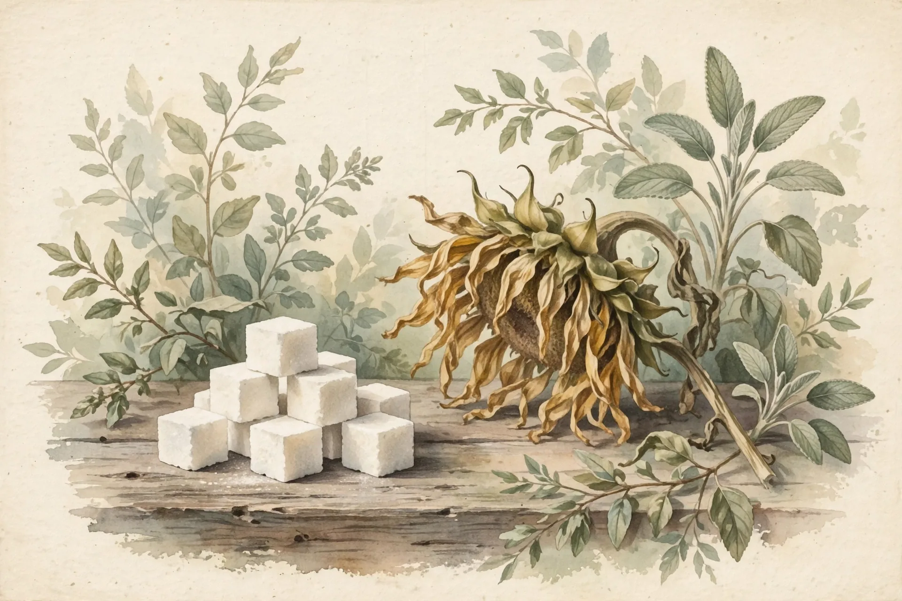

🍽️ Nutrition
The Sugar Rush Is a Myth. 31 Trials Found Sugar Makes You More Tired, Not More Alert
A meta-analysis of 31 randomized trials with 1,259 participants found no evidence that sugar improves mood or energy at any point after consumption. Within the first hour, the sugar group felt significantly more fatigued and less alert than the placebo group.

- Title
- Sugar Rush or Sugar Crash? A Meta-Analysis of Carbohydrate Effects on Mood
- Authors
- Mantantzis K, Schlaghecken F, Sünram-Lea SI, Maylor EA (2019)
- Institution
- Humboldt University of Berlin; University of Warwick; Lancaster University
- Journal
- Neuroscience & Biobehavioral Reviews, 2019, 101, 45–67
- Sample
- 1,259 participants across 31 studies (176 effect sizes pooled)
- Method
- Systematic review and meta-analysis of randomized, placebo-controlled trials of acute carbohydrate ingestion, analyzed across three time windows: 0–30, 31–60, and 61+ minutes post-ingestion
- Key Finding
- No positive effect of carbohydrates on any aspect of mood at any time point. Within the first hour, the carbohydrate group reported significantly higher fatigue and lower alertness than placebo
- Effect Size
- Pooled standardized mean differences (Hedges’ g): fatigue significantly higher with carbohydrates at 0–30 min (p = .011, 9 studies); alertness significantly lower at 31–60 min (p = .020, 12 studies); no positive carbohydrate effect on any mood construct at any time point
- Counterintuition
- ⚡⚡⚡⚡ 4/5
- Replication
- Meta-analyzed — the featured paper is itself the synthesis of 31 randomized trials. No retraction, correction, or PubPeer commentary on record as of October 2026. Directionally consistent with Wolraich et al. 1995, which dispelled the children’s ‘sugar rush’ myth
Every afternoon around three o’clock, the same transaction repeats in offices everywhere: the slump arrives, focus thins, and someone walks to the vending machine for a candy bar, not for pleasure but for fuel, because the purchase rests on one of the most widely held nutritional beliefs on the planet, that sugar is energy in its most direct form, a quick refill for a draining tank.
An entire product category was built on that belief, since in Europe alone energy drinks post more than €4 billion in annual sales, roughly 490 million liters a year, marketed substantially on the promise of combating fatigue and increasing energy, while in the United States sugary soft-drink consumption rose 135 percent between the 1970s and the early 2000s until soft drinks became the single largest source of calories in the American diet. Researchers note that the public strongly believes sugar improves mood and raises activity levels, and billions of purchases flow downstream of that conviction.
A meta-analysis in Neuroscience and Biobehavioral Reviews tested the conviction directly, and found it runs in reverse. Konstantinos Mantantzis and colleagues at Humboldt University of Berlin, the University of Warwick, and Lancaster University pooled 31 randomized, placebo-controlled trials covering 1,259 participants and 176 effect sizes, tracking mood across three windows after carbohydrate ingestion: the first 30 minutes, 31 to 60 minutes, and beyond an hour. Their headline result was total, with no positive effect of carbohydrates on any aspect of mood at any time point. Nothing.
What they found instead was a crash wearing a rush’s clothing, because within the first 30 minutes participants given carbohydrates reported significantly higher fatigue than those given a placebo across nine studies, and between 31 and 60 minutes alertness was significantly lower in the carbohydrate group across twelve studies. The only two significant effects in the entire analysis both landed inside the first hour, exactly the window where a “rush” should be peaking, and both pointed the wrong way.
The design deserves attention, because the authors went looking for the effect their critics would demand: they split the analysis into time windows precisely because the leading biological theory, the serotonin hypothesis, predicts a delayed benefit in which carbohydrates trigger insulin, insulin clears competing amino acids from the blood, tryptophan reaches the brain more easily, and serotonin synthesis rises. If that mechanism delivered a mood lift, it should appear after the first hour, yet across depression, tension, anger, calmness, contentedness, and vigor the 61-plus-minute window showed nothing, and the single marginal positive trend arrived with statistical warning flags for publication bias that the authors themselves tell readers not to trust. Outlier studies were pruned by a formal rule before pooling, and bias checks came back clean for the alertness findings.
Here is arithmetic no one has run on these numbers. A “rush,” if it existed, would have to live in the first hour while blood sugar climbs toward its peak, yet across 176 effect sizes from 31 trials the synthesis found zero positive effects anywhere in that window while the only significant arrows pointed toward more fatigue and less alertness. If sugar genuinely delivered even a small lift, a 1,259-person pooled analysis is exactly where it would surface, which means the 3pm candy bar buys measurably more tiredness within half an hour, and you are paying for the opposite of what the wrapper implies.
The market arithmetic is blunter still, since those 490 million liters of European energy drinks are sold in large part on a promise this evidence directly contradicts: that sugar combats fatigue and increases alertness. Whatever else those cans contain, the sugar in them is not doing the job the marketing describes.
The strongest case against this gloomy verdict starts with a distinction the paper itself respects, which is that mood is not cognition: the lead author’s own earlier work found that glucose can improve cognitive performance under demanding conditions, and other laboratories have reported memory benefits from glucose drinks. If the goal is finishing the spreadsheet rather than feeling perky, sugar might still help, because this meta-analysis measured how people felt rather than how they performed, and the “rush” may survive as a performance effect even where it fails as a mood effect.
Second, the serotonin story is not fantasy, since under stress and in clinical populations carbohydrate-driven shifts in tryptophan availability do appear to move mood, and the authors are explicit that the mechanism may behave differently under strain or in affective disorders. A calm laboratory is not a stressed life, and a null result in healthy volunteers does not close the book for everyone.
Third, expectation does real work: in some of the underlying trials, participants who merely believed they had consumed glucose reported greater alertness even when they had received a placebo. The ritual of the energy drink, the fizz, the branding, the belief, may deliver a lift the molecule does not, which is not nothing, only not pharmacology.
Fourth, athletes get a carve-out from the data itself, because in a moderator analysis carbohydrates did reduce fatigue measured after the first hour, but only when participants had performed physically demanding tasks, and a separate 96-study meta-analysis found that carbohydrate intake during prolonged exercise improves performance with a solid moderate effect. The marathoner’s gel and the cyclist’s bottle are a different story from the desk worker’s candy bar, which this paper does not touch. Finally, a glucose drink in a lab is not a meal: real foods mix macronutrients, and the paper notes that even small amounts of protein blunt the tryptophan mechanism, so what holds for a pure sugar dose may not hold for lunch.
What We Didn’t Prove
- The trials tested pure carbohydrate drinks against placebo in laboratories, not real meals, your specific soda, or a lifetime of eating patterns.
- Only acute effects were measured, the first hour or two. This says nothing about chronic sugar consumption, whose metabolic harms are established by entirely separate evidence.
- Outcomes were self-reported mood, not objective performance, productivity, or memory, where a different literature finds some positive glucose effects.
- Participants were mostly young, healthy adults. Children are covered by a separate meta-analysis, our companion piece below, while clinical populations and the sleep-deprived may differ.
- The athlete exception rests on a moderator analysis with few studies. Treat it as suggestive, converging with separate exercise research, rather than settled.
- This is a directional finding, not a dosage claim. The paper establishes that the arrow points toward fatigue, not how many yawns each gram of sugar buys.
The Bottom Line
Thirty-one trials and 1,259 participants found no evidence that sugar lifts mood or energy at any point after you consume it, and the significant effects point the other way: more fatigue within 30 minutes, less alertness within the hour. The “sugar rush” is not a small effect or a fragile one. It is a myth with the sign flipped. Keep the candy bar if you enjoy it, but stop buying it as fuel. The one population with evidence on its side is athletes mid-exertion, and you are probably reading this at a desk.
What You Can Do
- Retire the 3pm candy bar as an energy strategy. The pooled evidence says it delivers more fatigue within half an hour, not less.
- Separate the craving from the fuel gauge. Want something sweet? That is a preference, and preferences need no justification. Expecting alertness from it is the part with no support.
- If you compete in endurance sports or do hard physical labor, this is not about you. Carbohydrates during prolonged exertion have separate, supportive evidence.
- Read “energy” marketing as a claim about a feeling. The ingredient most associated with the promise is, by the best synthesis available, working against it.
- For the children’s version of this myth, read our companion piece. A 23-study meta-analysis found sugar does nothing to kids’ behavior either, and the adult paper cites it directly.
- Notice the mechanism the next time the slump hits. The dip you feel at 3pm is real, but the fix is not in the vending machine.
Related Reading

Sources
- Mantantzis K, Schlaghecken F, Sünram-Lea SI, Maylor EA. Sugar Rush or Sugar Crash? A Meta-Analysis of Carbohydrate Effects on Mood. Neurosci Biobehav Rev. 2019;101:45-67. doi:10.1016/j.neubiorev.2019.03.016
- Wolraich ML, Wilson DB, White JW. The effect of sugar on behavior or cognition in children: a meta-analysis. JAMA. 1995;273(22):1610-1614. doi:10.1001/jama.1995.03530200053037
- Meta-analysis of carbohydrate solution intake during prolonged exercise in adults (96 studies): carbohydrate supplementation during exercise improved performance, SMD 0.43. Nutrients. 2021;13(12):4223. doi:10.3390/nu13124223
- University of Warwick press release: “No such thing as ‘sugar rush’” (April 4, 2019), summarizing the Mantantzis et al. findings. warwick.ac.uk